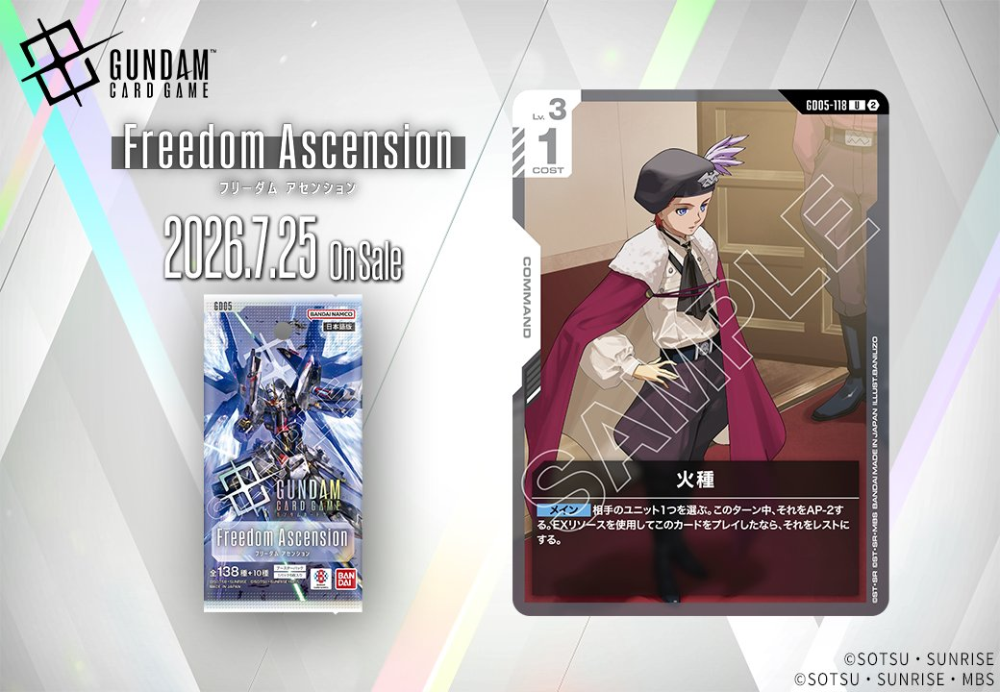
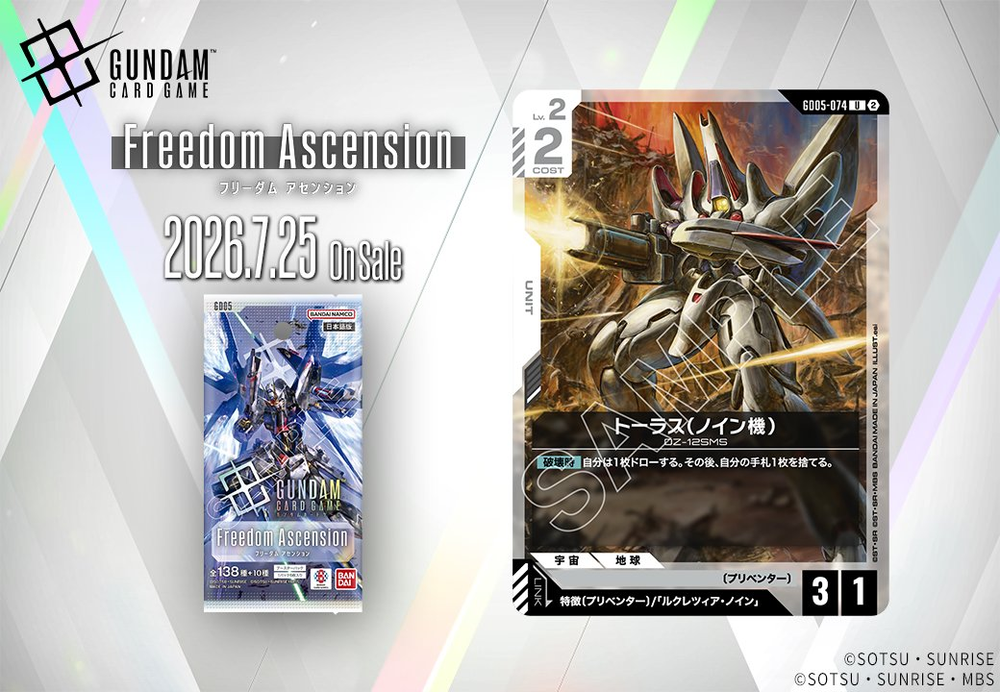
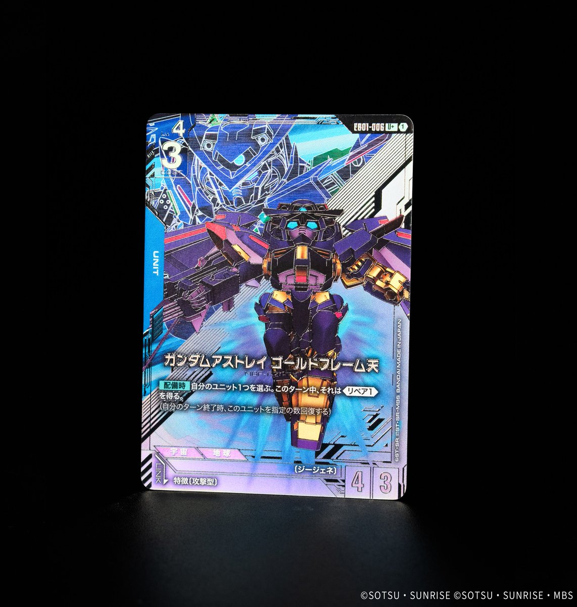

ガンダムカードゲーム2026年7月の最新情報として、7月25日発売の「Freedom Ascension」から白色のCOMMANDカード「火種」とリンク能力を持つUNIT「トーラス(ノイン機)」、そして「EB01」収録の青色UNIT「ガンダムアストレイ ゴールドフレーム天」の計3枚のカード情報が公開されました。

火種 (GD05-118)
| 色 | 白 | タイプ | COMMAND |
| Lv | 3 | コスト | 1 |
効果: 【メイン】相手のユニット1つを選ぶ。このターン中、それをAP-2する。EXリソースを使用してこのカードをプレイしたなら、それをレストにする。
火種は1コストでAP-2を付与する白系コマンドカード。低コストで相手ユニットの戦闘力を削ぐことができ、EXリソース使用時はレストまで追加できる優秀な除去補助カード。 白系の主力であるブロッカーユニットと組み合わせることで、相手の攻撃を受け止めやすくなり、キラ・ヤマトのAP-2効果と重ねることで大型ユニットも処理可能になる。

トーラス(ノイン機) (GD05-074)
| 色 | 白 | タイプ | UNIT |
| Lv | 2 | コスト | 2 |
| AP | 3 | HP | 1 |
| 特徴 | 〔プリベンター〕 | ||
| リンク条件 | 「ルクレツィア・ノイン」 | ||
効果: 【破壊時】自分は1枚ドローする。その後、自分の手札1枚を捨てる。
トーラス(ノイン機)はCOST2/AP3/HP1というやや脆いステータスながら、【破壊時】に1枚ドローして手札1枚を捨てる手札交換効果を持つ白のユニットです。リンク対象の「ルクレツィア・ノイン」と組み合わせることで〔プリベンター〕特徴を活かした運用が期待でき、破壊されても手札の質を向上させられるため序盤の壁役として機能します。白の定番コマンド「溢れる慈愛」と同様の手札交換効果を【破壊時】トリガーで実現できるのが特徴的で、相手の除去を誘いつつアドバンテージを失わない設計になっています。

ガンダムアストレイ ゴールドフレーム天 (EB01-006)
| 色 | 青 | タイプ | UNIT |
| Lv | 4 | コスト | 3 |
| AP | 4 | HP | 3 |
| 特徴 | ジージェネ | ||
効果: 【配備時】自分のユニット1つを選ぶ。このターン中、それは《リペア(1)》を得る。
ガンダムアストレイ ゴールドフレーム天は、配備時に味方ユニット1つに《リペア(1)》を付与する青色のサポートユニット。コスト3でAP4/HP3の標準的なスペックを持ち、場に出すだけで味方の耐久力を強化できる即効性が魅力。 《リペア(1)》により毎ターン終了時にHPが1回復するため、主力ユニットやブロッカーに付与すれば継戦能力が大幅に向上し、長期戦で優位に立てる。
関連カード
-
 溢れる慈愛(GD01-118)白系デッキ内採用率41.1% (1586デッキ)
溢れる慈愛(GD01-118)白系デッキ内採用率41.1% (1586デッキ) -
 ガンダム・ルブリス(GD01-086)白系デッキ内採用率38% (1469デッキ)
ガンダム・ルブリス(GD01-086)白系デッキ内採用率38% (1469デッキ) -
 エールストライクガンダム(ST04-001)白系デッキ内採用率36.2% (1398デッキ)
エールストライクガンダム(ST04-001)白系デッキ内採用率36.2% (1398デッキ) -
 キラ・ヤマト(ST04-010)白系デッキ内採用率35.9% (1385デッキ)
キラ・ヤマト(ST04-010)白系デッキ内採用率35.9% (1385デッキ) -
 リック・ディアス(GD02-079)白系デッキ内採用率30.4% (1173デッキ)
リック・ディアス(GD02-079)白系デッキ内採用率30.4% (1173デッキ) -
 アムロ・レイ(ST01-010)青系デッキ内採用率57.6% (2223デッキ)
アムロ・レイ(ST01-010)青系デッキ内採用率57.6% (2223デッキ) -
 ガンダム(ST01-001)青系デッキ内採用率56.7% (2190デッキ)
ガンダム(ST01-001)青系デッキ内採用率56.7% (2190デッキ) -
 覚悟の表れ(GD01-100)青系デッキ内採用率49.9% (1928デッキ)
覚悟の表れ(GD01-100)青系デッキ内採用率49.9% (1928デッキ) -
 コルシカ基地(ST02-016)青系デッキ内採用率44.6% (1722デッキ)
コルシカ基地(ST02-016)青系デッキ内採用率44.6% (1722デッキ) -
 ガンタンク(GD01-008)青系デッキ内採用率39% (1507デッキ)
ガンタンク(GD01-008)青系デッキ内採用率39% (1507デッキ)